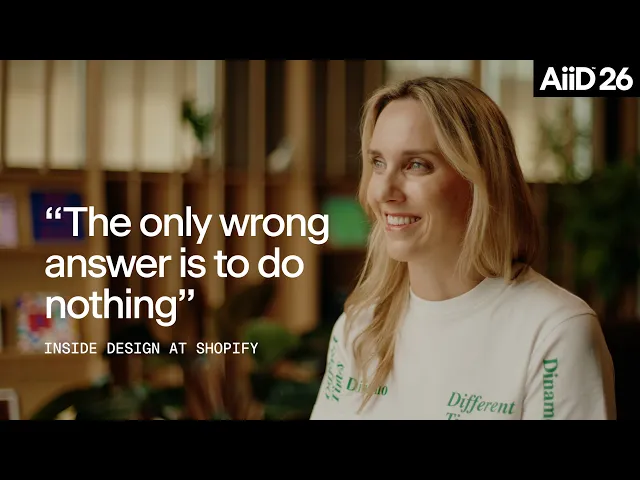
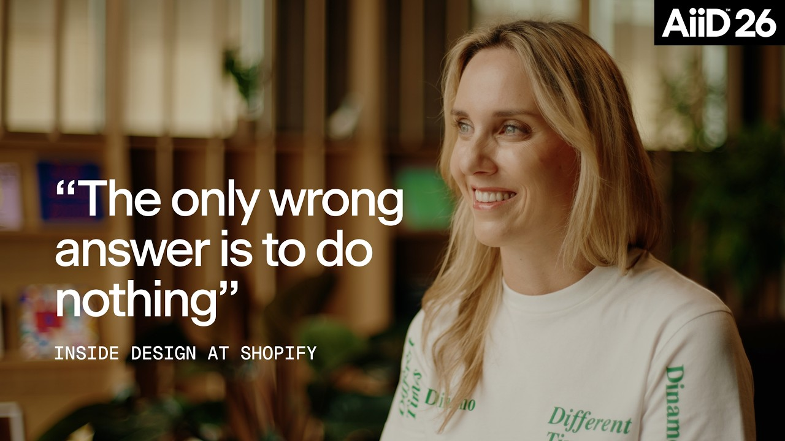

中文全文译文：由「译文工坊」根据英文原文自动翻译生成，供学习参考。结构与措辞以译文为准；想看原始论述，请点上方「阅读原文」。

Designer Fund
2025 年 4 月，Shopify CEO Tobi Lütke 发布了一份备忘录，称使用 AI 不再是可选项。从外部看，这像是一份最后通牒。但 Shopify 设计副总裁 Katarina Batina 表示，在设计团队内部，这只是印证了许多人早已有的感受。
“我们在 Shopify 工作的人都知道，这将是一次巨大的解放，”Katarina 说。“我们可以不受限制地使用所有能想到的工具，还有无限量的 Token，来探索在这个新时代设计究竟意味着什么。”
一年过去，成果有目共睹：Shopify 大约 60% 的设计师现在会直接向生产环境提交代码，自去年 9 月以来增长了 38%。他们一起在公司内部托管平台 Quick 上搭建了 5,500 多个在线原型站点。
当一切都变得如此之快，设计师该如何成长？
通过与 Shopify 设计团队的多次交流，我们发现，适应得最快的设计师未必是经验最丰富的，而是最愿意持续进化的人：摆脱旧习惯，更贴近产品，并与身边的人一起学习。


“唯一错误的答案就是什么都不做”
多年来，设计工具的更迭节奏是可预期的。Photoshop 让位于 Sketch，后者最终又让位于被数十万团队采用的 Figma。如今，几乎每周都有新的 AI 工具出现，工具栈不断演变，工作流也持续变动。
这样的节奏带来了新的压力。设计师被期望掌握编排智能体、用代码构建等新技能，同时又担心传统上定义优秀设计的那些品质，会被技术熟练度所掩盖。
对于初级新人和首席设计师，Katarina 给出的建议都一样简单：多去尝试。
“唯一错误的答案就是什么都不做，被困在原地、什么也不去尝试，”她说。“现在很棒的一点是，我团队里从业 15 年的设计师，正和刚入职一周的新人一起重新学习，一起回答这个问题。”

不过，赛场突然被抹平，也会让人有些措手不及。Shopify 的首席产品设计师 Luke Dupont 回忆说，他休假归来后发现，同事们已经在用全新的工作流飞速构建。“我还在做自己最擅长的事，也就是用 Figma，”他说。
于是他重新拾起几个月前搁置的一个想法：重新思考商家如何在 Shop 内搭建自己的网店。他最初的 Figma 原型给人的感觉是“静态而不真实”。这一次，他用真实的商家数据和 Shop 现有的组件，在一个下午就做出了可运行的版本。到了周一，他分享的不再是演示文稿，而是一个 Quick 链接，团队成员可以直接操作，并随着它的演进持续参与。“这几年里，我的职业生涯从未像现在这样有趣，”Luke 说，“有了这种全新的方式，我能真正释放创造力，去构建，而不只是绘制。”
设计师们也越来越自如地在不同工具之间切换。有些设计师用 Codex，有些用 Claude Code。还有一些人更进一步，打造自己的智能体 harness 和工作流，贴合自己的思维方式和想要构建的东西。“看着设计师设计自己的开发体验，真的很酷，”Katarina 说。
资深动效设计师 Yaël Bienenstock 参与的交互式网站 shopify.design，就是一个很好的示例，说明同时运用多种工具能解锁新的创意可能。
为了打造一个动画角色，让它的羽绒服随着每次点击展开并变形，她混合使用了多种生成式 AI 工具（Krea、Midjourney、Gemini、Rive）来制作动画的不同部分，再在 After Effects 中拼合，最后导入 Claude。整个过程高度迭代，每个工具都为最终成果贡献了一块拼图。“你不可能一次就得到完美的产出，这完全没关系。意识到这并不是终点，这对我来说是巨大的突破。”

当设计师因为现有工作流用起来更快而抗拒新工作流时，Katarina 鼓励他们接受暂时慢下来，以便日后更快：“只要你花时间真正学会这些新工具，就会实现质的飞跃。”
但有一个重要的提醒：不要对工具本身着迷。“我有点担心功能会追随形式，”她说。“关于这周流行什么工具、下周又流行什么工具，有太多的讨论。问题在于，我们可能会失去与自己想回答的问题、以及与我们为之构建软件的人之间的联系。”
更贴近产品
Katarina 在设计师身上看重两个核心品质：“我一直想雇用那些对把自己的设计做出来充满热情、并且真正在乎自己对业务有何影响的设计师。”
这两点并非只在当下才有，但不同的是，如今达到这两条标准要容易得多。“即使你不是技术出身，上手并开始参与代码贡献也从未如此简单。”
另一方面，Katarina 说：“那些职业生涯一直专注于执行的设计师……对于设计未来的走向来说，这样的视野可能有些狭窄。”
如今，设计师可以直接在命令行中查询 Shopify 的数据仓库，或检索多年来的商家访谈和支持记录。许多影响产品决策的问题，他们不再需要等待其他团队来回答，从而能更直接地参与理解用户和业务。
Taylor Cottrell 是负责 Shop 的 Design Apprentice，他在设计全新的智能体化信息流体验时亲历了这种转变。他首先把一份工程文档放进 Shopify 的大语言模型（LLM）代理中，以了解底层系统的约束——延迟、懒加载、去重以及卡片选择逻辑。这些技术边界不再是流程后期才发现的问题，而是成为设计本身的基础输入，也改变了他与工程团队合作的方式。
“工程师们觉得我已经越过桌子的一半以上去了解他们面对的问题，这让他们对我们最终提出的方案更加开放，”Taylor 说。
归根结底，他想要足够深入地理解底层系统，从而做出更好的设计决策。

与其他设计师一起学习
除了个人工作流之外，AI 也在从根本上改变设计师之间的协作方式。
过去共享的 Figma 文件，如今散落在本地代码库和 AI 驱动的原型之中。评审设计不再只是打开一个链接那么简单，团队需要更有意识地规划协作方式。
为了让设计师保持连接，Shopify 自研了内部工具来弥合这道鸿沟。Quick 让任何人都能通过链接托管并分享可运行的原型，而 Artifact 则是内部设计工作的中央枢纽。
高级产品设计师 Liam Fennell 打造了 Purl，这是一款一键式工具，可以用 React Native、Swift 或 Expo 启动真实的 Shop 客户端，让不懂技术的设计师无需接触终端，就能直接在生产代码库中制作原型。

然而，再好的工具也无法取代与其他设计师并肩而坐、一起交付产品的体验。对早期职业阶段的设计师来说尤其如此：当前整个行业对初级岗位的招聘在减少，而对新人的期望却在不断提高。Shopify 正在加倍投入这种面对面的学习方式，纽约新开设的 Design Studio 就是例证，这是一个设计精美的空间，设计师们可以在这里并肩工作。
Shopify 的设计学徒计划（Design Apprenticeship Program，DAP）是公司应对这一问题的方式之一。该计划为期六个月，把一小批初级设计师安排到产品和品牌团队中，配以经验丰富的导师，让他们参与真实的、已交付的项目。理念很简单：与优秀的设计师一起学习，成长最快。

对 Katarina 来说，这种信念格外切身。2012 年，她几乎没有任何软件经验，却拿到了 Facebook 的实习机会，因为一群设计师没有只看她的简历，而是看到了她的潜力。
“那段三个月的实习改变了我整个职业生涯的轨迹。我今天能走到这里，很大程度上要归功于那段经历，而现在我也希望自己有能力把同样的机会传递出去。”
随着 AI 整体抬高了设计师的能力上限，像 DAP 这样的计划有助于回答一个日益重要的问题：下一代设计师要如何获得塑造优秀设计师的经验？
这一切对设计师意味着什么
技术会不断变化。新的工作流会出现，“设计师”的定义也会持续演进。
但不变的是驱动成长的心态：保持好奇，贴近产品，并不断向身边的人学习。AI 或许正在改变设计的完成方式，但在 Shopify，它最终印证的是一条亘古不变的真理：最优秀的设计师，始终是那些从未停止成长的人。
“这个时代真正属于那些最具创造力的人，他们的创作野心会随着工具能力的提升而不断攀升，”Katarina 说。
AI 正在改变一切，设计师该如何成长：走进 Shopify 的设计团队
科技圈最执着于工艺的团队如何使用 AI：走进 Linear 的设计团队
下一篇
最新文章